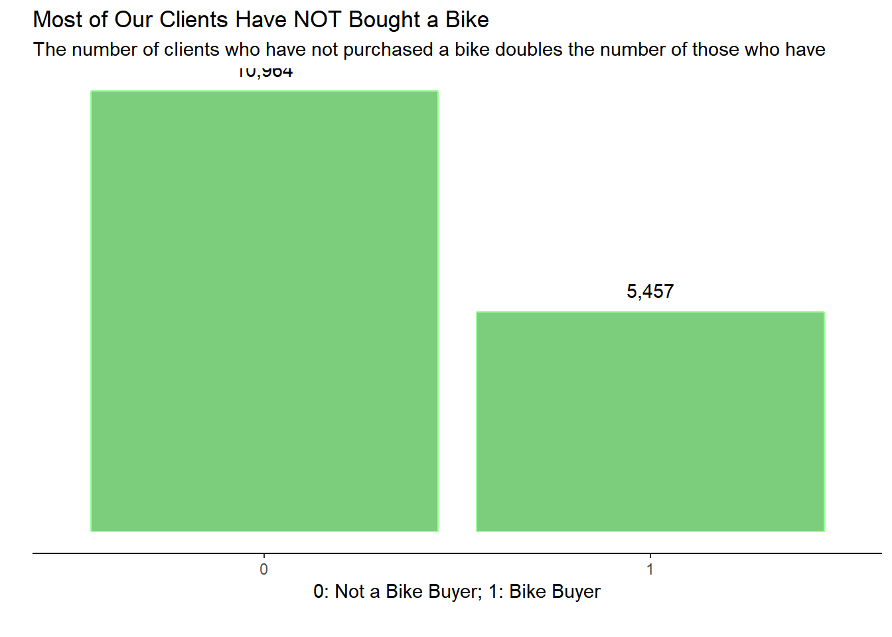
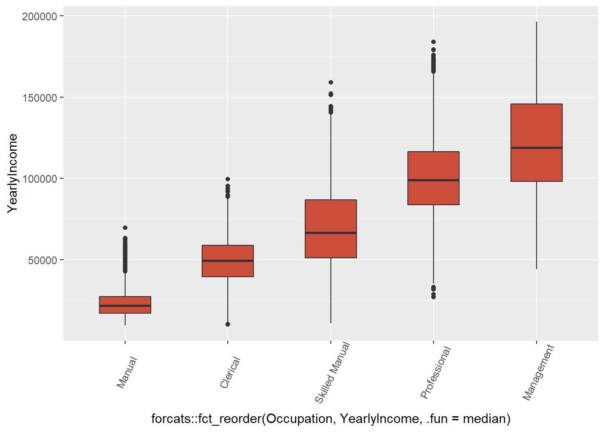
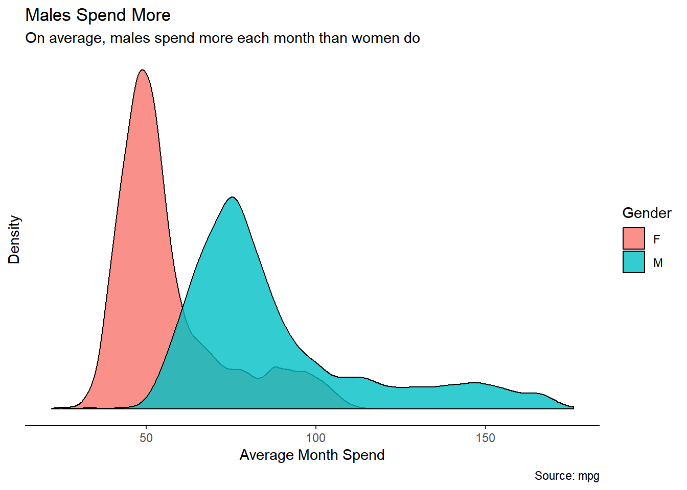
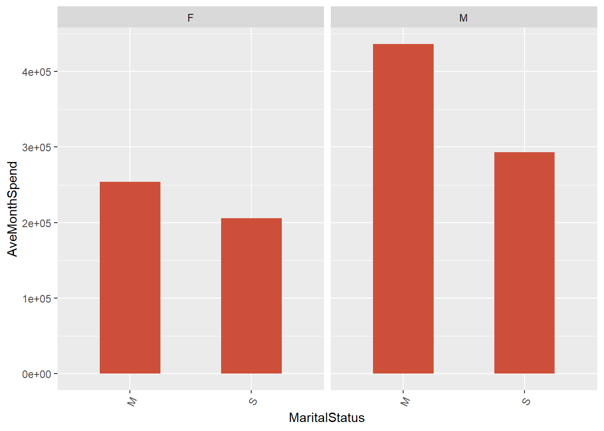

EDA is an important part of any data analysis. It consists an iterative cycle, where we: (a) generate questions about your data, (b) search for answers by visualising, transforming, and modelling your data; and (c), Use what you learn to refine your questions and/or generate new questions. Here we’ll explore the data to see if we can find any good insights to share with the marketing department.
The dataset found online consists of three files, containing data that was collected on January 1st 1998.
library(readr)
library(dbplyr)
library(ggplot2)
library(tidyverse)
library(ggplot2)
library(readr)
library(data.table)
library(DT)
library(pander)
library(scales)
library(cowplot)
library(shiny)customer <- read_csv("~/CS 499 Senior Project/datasets/AdvWorksCusts.csv")
spend <- read_csv("~/CS 499 Senior Project/datasets/AW_AveMonthSpend.csv")
bikebuyer <- read_csv("~/CS 499 Senior Project/datasets/AW_BikeBuyer.csv")
three_datasets <- data.frame(customer, spend, bikebuyer)
data_clean <- select(three_datasets,-c(CustomerID.1, CustomerID.2))
missing_values <- sapply(data_clean, function(x) sum(is.na(x))) #it checks number of missing values by column
data_clean <- select(three_datasets,-c(CustomerID.1, CustomerID.2, Title, MiddleName, Suffix, AddressLine2))
data_clean <- data_clean[!duplicated(data_clean), ] #it removes duplicates#min(data_clean$AveMonthSpend)
#max(data_clean$AveMonthSpend)
#mean(data_clean$AveMonthSpend)
#median(data_clean$AveMonthSpend)
pander(summary(data_clean$AveMonthSpend))| Min. | 1st Qu. | Median | Mean | 3rd Qu. | Max. |
|---|---|---|---|---|---|
| 22 | 52 | 68 | 72.4 | 84 | 176 |
#sd(data_clean$AveMonthSpend)The distribution of the values in the BikeBuyer column:
ggplot(data_clean, aes(x = as.factor(BikeBuyer))) +
geom_histogram(binwidth = .5, colour = "blue", fill = "white", stat = 'count') Insight: fewer customers have bought bikes than have not bought bikes. We should consider adveritising our bikes more, rather than just the parts.
mean YearlyIncome by Occupation:
ggplot(data_clean, aes(x = forcats::fct_reorder(Occupation, YearlyIncome, .fun=median), y = YearlyIncome)) +
geom_boxplot( width = .5, fill="tomato3") +
theme(axis.text.x = element_text(angle=65, vjust=0.6)) Insight: from lowest to highest: Manual, Clerical, Skilled Manual, Professional, Management.
Average month spend by gender
g <- ggplot(data_clean, aes(AveMonthSpend))
g + geom_density(aes(fill=factor(Gender)), alpha=0.8) +
labs(title = "Density plot",
subtitle = "",
caption = "Source: mpg",
x = "Average Month Spend",
fill = "Gender") INsight: Males on average tend to spend more (age between 25-45, find a way to divide it between >25, 25-45, 46<).
ggplot(data_clean, aes(x = MaritalStatus, y = AveMonthSpend)) +
geom_bar(stat = "identity", width = .5, fill="tomato3") +
theme(axis.text.x = element_text(angle=65, vjust=0.6)) +
facet_wrap(~Gender)  INsight: Married Male spend more People with no children at home spend more.